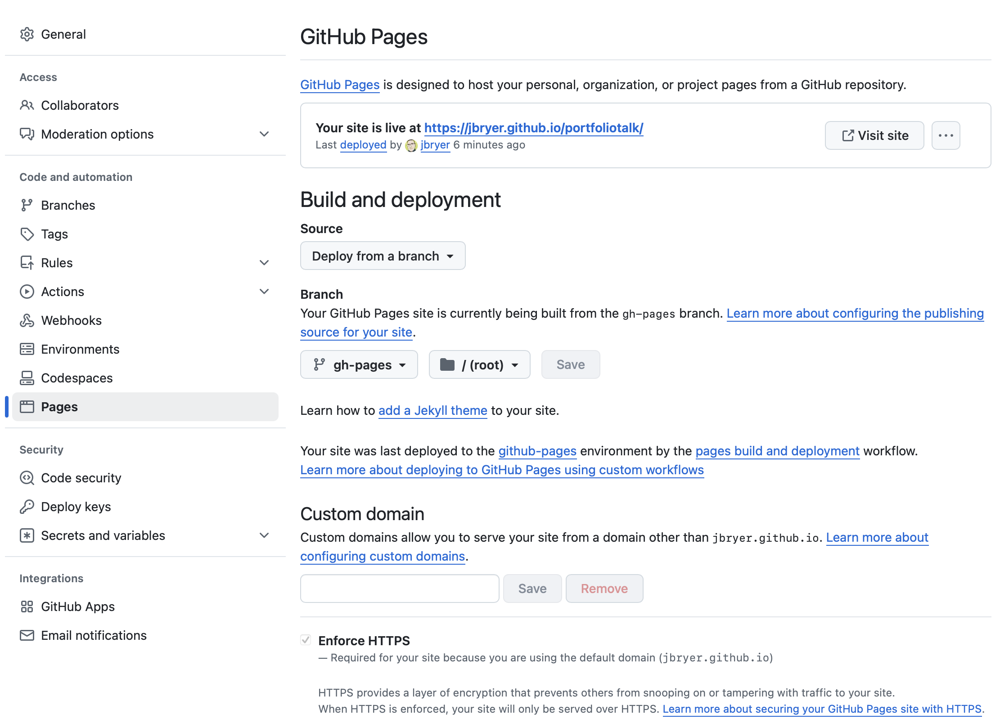

project:
type: website
output-dir: docs
render:
- "*.qmd"
- "!slides/"
post-render:
- "cp -rnv slides/. docs/slides/"
website:
title: "Jason Bryer, Ph.D."
site-url: https://jbryer.github.io/portfoliotalk
description: "Sample portfolio website"
open-graph:
locale: en_US
twitter-card:
creator: "@jbryer"
navbar:
right:
- text: "Home"
href: index.html
- text: "Projects"
href: projects.html
- text: "Blog"
href: blog.html
- icon: rss
href: blog.xml
page-footer:
left: "Site created with Quarto by Jason Bryer."
format:
html:
theme: yeti # See for available themes: https://bootswatch.com
css: styles.css
toc: trueBuilding a Portfolio with Github and Quarto
Jason Bryer, Ph.D.
2025-02-19
Static vs Dynamic Websites
Static websites displays the same pre-built content to every visitor…
While a dynamic websites generate content on the fly based on user interactions.
An important advantages of static websites include faster load times, less bandwidth, and cheaper hosting (often free).
Static Website Frameworks
There are a number of static website frameworks including:
- Hugo
- Lots of free themes
blogdownR package- Examples: my personal website and CV site
- Jekyll
- Quarto
- Relatively new but language agnostic.
- Designed to work well with R, Python, Julia, SQL, and any language used by data scientists and programmers.
- Example: DATA 606 course site, Visual Stats book
Markdown
A common feature of most of the static website frameworks is that the site content is moslty written in Markdown. Markdown, originally created by John Gruber, is a lightweight markup language for creating formatted text using a plain-text editor. The idea is to write with minimal markup and let the website/document creator handle the specific styling.

Here are some additional resources for learning markdown:
Literate programming
Donald Knuth introduced a programming framework in 1984 called literate programming. The core idea is that a computer program is written in plain language with interspersed (i.e. embedded) code snippets that implement what is described in the plain text. This has been the foundation for researchers conducting reproducible research. For example, data scientists maintain one document that can contains the description of analyses along with the code that performs the analyses. When the document is rendered, all the code is executed and the output (e.g. tables, figures) are embedded within the final document (e.g. PDF, Word, HTML).
RMarkdown was an extension to allow for the embedding of R code within markdown documents.This was initially implemented in the knitr and later allowed for embedding of other languages including Python and SQL.
Quarto extends the ideas of RMarkdown but removes the requirement of R for rendering documents.
Both Quarto and RMarkdown use the following format to embed code that will be executed when the document is rendered:
Where LANGUAGE is the programming language (e.g. r, python, sql, bash, etc.).
Common Code Chunk Options
Full list of options available here: https://quarto.org/docs/computations/execution-options.html
eval- Evaluate the code chunk (if false, just echos the code into the output).echo- Include the source code in outputoutput- Include the results of the code (true,false, orasis).warning- Include warnings in the output.error- Include errors in the output.include- Catch all for preventing any output (code or results) from being included (e.g.include: falsesuppresses all output from the code block).fig-cap- Figure caption.fig-alt- Alt text for the figure.fig.align- Figure alignment (center,left,right)
Getting Started
Creating a new Quarto website from the command line:
Or you can clone the repository from this talk:
More detailed directions are available on the Quarto website including using VSCode and Rstudio.
Getting Started with RStudio

Getting Started with RStudio (cont.)
Getting Started with RStudio (cont.)
Rendering and previewing
You can then preview the website using (this will run a small webserver):
Or to render the entire webiste:
Customizing your website
The _quarto.yml file contains a lot of options to customize your website. Full list of options is available here: https://quarto.org/docs/reference/formats/html.html
Home page
The index.qmd file is our homepage.
---
title: "Jason Bryer, Ph.D."
about: # More info about this page type: https://quarto.org/docs/websites/website-about.html
template: trestles # Options include: jolla, trestles, solana, marquee, broadside
image: Headshot_Cartoon.jpg
links:
- text: LinkedIn
icon: linkedin
url: "https://www.linkedin.com/in/jasonbryer/"
- text: Mastodon
icon: mastodon
url: "https://vis.social/@jbryer"
- text: GitHub
icon: github
url: "https://github.com/jbryer"
- text: Email
icon: envelope
url: "mailto:jason.bryer@cuny.edu"
- text: CV
icon: file-pdf
url: "https://github.com/jbryer/CV/blob/master/Bryer_CV.pdf?raw=true"
comments: false
---
::: {.column-page}
Dr. Jason Bryer is currently an Assistant Professor and Associate Director in the [Data Science and Information Systems](https://sps.cuny.edu/academics/graduate/master-science-data-science-ms) department at the [City University of New York](https://sps.cunuy.edu). He is currently the Principal Investigator of the FIPSE ($3 million #P116F150077) and IES funded ($3.8 million R305A210269) [Diagnostic Assessment and Achievement of College Skills (DAACS)](https://daacs.net), which is a suite of technological and social supports designed to optimize student learning. Dr. Bryer’s other research interests include quasi-experimental designs with an emphasis on propensity score analysis, data systems to support formative assessment, and the use of open source software for conducting reproducible research. He is the author of over a dozen [R packages](https://github.com/jbryer?tab=repositories), including three related to conducting [propensity score analyses](https://psa.bryer.org). When not crunching numbers, Jason is a [wedding photographer](https://bryerphotography.com) and proud dad to three boys.
## Education
Ph.D. in Educational Psychology & Methodology, 2014, University at Albany
M.S. in Educational Psychology & Methodology, 2009, University at Albany
B.S. in Mathematics, 1999, The College of Saint Rose
## Selected Projects
[likert](https://github.com/jbryer/likert) - Analysis and Visualization of Likert Based Items
[medley](https://github.com/jbryer/medley) - Predictive Modeling with Missing Data
[clav](https://github.com/clav) - Cluster Analysis Validation
:::Additional Pages
It is easy to add additional pages. The following can serve as a template for new pages.
Remember, for a page to show up in the navigation bar it needs to be added to the _quarto.yml file as well:
Blog posts
Blog posts can be placed in the /posts directory. Here is an example QMD file for a blog post:
---
title: "Building a portfolio with Github and Quarto"
description: "Slides for a talk on how to build a portfolio website using Github"
date: "2025-02-19"
categories: ["Github", "Quarto"]
image: 2025-02-19-Github_Portfolio.png
---
This is a blog post...The blog.qmd file builds the index of posts. Check that file as there are a few things you can customize.
Note that Quarto will automatically build an RSS feed, in this case called blog.xml.
Github Pages
In order to ensure our project is ready to publish to Github, we need to do a couple of things. First, we need to change the output directory for when Quarto renders the website to docs/. In the _quarto.yml file, change the outout-dir parameter:
Second, Github pages defaults to Jekyll for rendering. To tell Github to not use Jekyll we need to add a file, .nojekyll, to the root of our project. Run the following in the terminal appropriate for your platform:
Creating a Local Git Repo
The following (terminal) commands will create, add, then commit our files to a local git repository:
git init -b main # Initialize Git repo.
git add . # Add the files to the repo
git commit -m "Initial version" # Commit the files to the repoOr use the RStudio git integration:
Publishing to Github
Got to https://github.com/new
Create a new repository on Github (see figure to the right). Note that it is public and we did not initialize anything else (e.g. readme, .gitignore, license, etc.).
The resulting page will have directions, but for now just copy the repository URL to be used in the next step.
Pushing to Github (cont.)
- Run the following command in the terminal. Note that you need to change the URL to your repository from step 3.
- Verify the repository was created correctly.
- Push the local repository to Github.
The source code for your website should not be on Github.
Deploying website to Github
Now we can publish the website to Github. Note that this publishes to the gh-pages branch.
We can verify the site is configured correctly here: https://github.com/jbryer/portfoliotalk/settings/pages
Custom Domain (optional)
You can register a custom domain at many places. I recommend Hover since it is easy to use and reasonably priced. Important steps: create four A records pointing to Github’s IP addresses: 185.199.108.153, 185.199.109.153, 185.199.110.153, and 185.199.111.153.
For subdomains, create CNAME record pointing to GITHUB_USER.github.io where GITHUB_USER is your Github username.
Detailed directions on using a custom domain are available on Github’s website
Github Actions
We can automate the generation and deployment of our website using Github actions. The file below is located in the .github/workflows/ directory.
on:
push:
branches: [main, master]
name: Render and Publish Quarto WEbsite
permissions:
contents: write
pages: write
jobs:
build-deploy:
runs-on: ubuntu-latest
steps:
- name: Check out repository
uses: actions/checkout@v4
- name: Set up Quarto
uses: quarto-dev/quarto-actions/setup@v2
env:
GH_TOKEN: ${{ secrets.GITHUB_TOKEN }}
with:
# To install LaTeX to build PDF book
tinytex: true
# uncomment below and fill to pin a version
# version: SPECIFIC-QUARTO-VERSION-HERE
# add software dependencies here and any libraries
# From https://github.com/actions/setup-python
# - name: Setup Python
# uses: actions/setup-python@v3
# From https://github.com/r-lib/actions/tree/v2-branch/setup-r
# - name: Setup R
# uses: r-lib/actions/setup-r@v2
# From https://github.com/julia-actions/setup-julia
# - name: Setup Julia
# uses: julia-actions/setup-julia@v1
# See more at https://github.com/quarto-dev/quarto-actions/blob/main/examples/example-03-dependencies.md
# To publish to Netlify, RStudio Connect, or GitHub Pages, uncomment
# the appropriate block below
# - name: Publish to Netlify (and render)
# uses: quarto-dev/quarto-actions/publish@v2
# with:
# target: netlify
# NETLIFY_AUTH_TOKEN: ${{ secrets.NETLIFY_AUTH_TOKEN }}
# - name: Publish to RStudio Connect (and render)
# uses: quarto-dev/quarto-actions/publish@v2
# with:
# target: connect
# CONNECT_SERVER: enter-the-server-url-here
# CONNECT_API_KEY: ${{ secrets.CONNECT_API_KEY }}
# NOTE: If Publishing to GitHub Pages, set the permissions correctly (see top of this yaml)
- name: Publish to GitHub Pages (and render)
uses: quarto-dev/quarto-actions/publish@v2
with:
target: gh-pages
env:
GITHUB_TOKEN: ${{ secrets.GITHUB_TOKEN }} # this secret is always available for github actions
# - name: Publish to confluence
# uses: quarto-dev/quarto-actions/publish@v2
# with:
# target: confluence
# env:
# CONFLUENCE_USER_EMAIL: ${{ secrets.CONFLUENCE_USER_EMAIL }}
# CONFLUENCE_AUTH_TOKEN: ${{ secrets.CONFLUENCE_AUTH_TOKEN }}
# CONFLUENCE_DOMAIN: ${{ secrets.CONFLUENCE_DOMAIN }}Github Actions
You can check the status of your Github actions here: https://github.com/jbryer/portfoliotalk/actions
Thank you!
Links:
- Github repository: https://github.com/jbryer/portfoliotalk
- Example website: https://jbryer.github.io/portfoliotalk/
- Slide deck: https://jbryer.github.io/portfoliotalk/slides/Portfolio_Talk.html
Additional Resources: